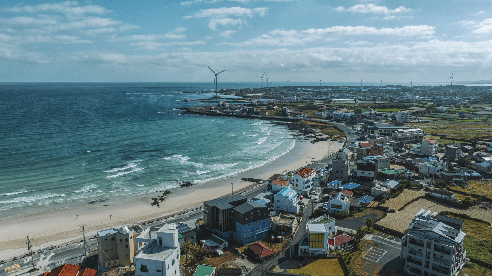
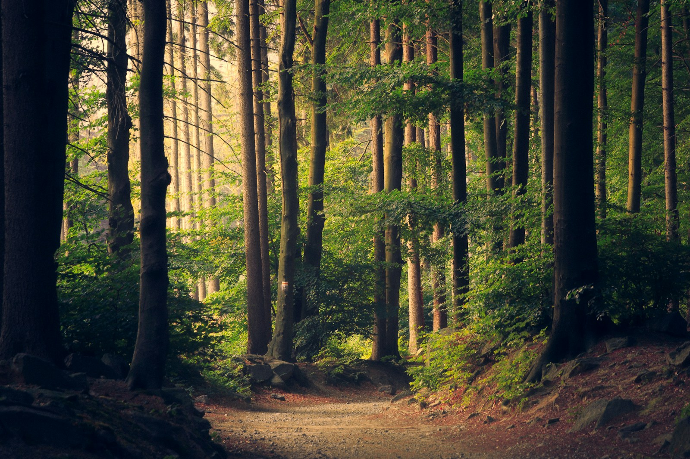

분위기 이미지GO, HEUNG.
공식 소개 사례
영상 제작부터 아티스트 섭외, 축제와 콘텐츠까지.
우리 지역에 꼭 맞는 홍보를 시작하세요.

JEJU, KOREA · 분위기 이미지가까운 곳에서 발견하는,
새로운 가능성.
지역과 브랜드가 만나,
새로운 이야기가 되었습니다.
우리 지역에 꼭 맞는 콘텐츠와 사람.
필요한 만큼, 원하는 방식으로 함께합니다.
알리고 싶은 것과 생각한 예산을 알려주세요.
우리 지역에 맞는 홍보의 방향을 찾아드립니다.
지역의 매력과 브랜드의 가능성을
콘텐츠로 연결한 프로젝트를 만나보세요.

분위기 이미지BETTER, TOGETHER.사례 내용은 공식 서비스 소개 기준입니다. 이미지는 이해를 돕는 분위기 사진으로, 실제 납품 콘텐츠와 다릅니다.
여러 곳에 따로 문의하지 않아도 됩니다.
전담 매니저가 기획과 제작의 흐름을 연결합니다.
완성된 기획이 없어도 시작할 수 있어요.
콘텐츠와 파트너, 일정과 예산을 함께 정리해요.
오가는 문서와 피드백을 프로젝트 안에서 확인해요.
제안 내용을 확인하고 의견을 남겨주세요.
기획부터 완료까지, 함께합니다.
처음 시작하는 지역 홍보도
차근차근 함께 알아가세요.
네. 알리고 싶은 지역이나 행사, 기대하는 결과만 있어도 괜찮습니다. 예산이 미정이라면 그 상태로 남겨주세요. 필요한 콘텐츠와 범위를 함께 정리하는 방향으로 상담을 시작합니다.
지자체와 관광·문화 관련 기관은 물론, 지역 행사나 콘텐츠를 준비하는 개인도 의뢰할 수 있습니다. 로컬 브랜드와 사업자의 홍보 목적에 맞는 협업도 함께 논의합니다.
프로젝트 목표에 맞춰 영상·디자인·인쇄, 가수·MC·인플루언서 섭외 등을 함께 구성할 수 있습니다. 실제 진행 가능 여부는 출연 조건, 일정과 예산을 확인한 뒤 안내합니다.
출연진, 촬영일, 제작 편수, 사용 채널과 기간에 따라 달라집니다. 관심 있는 사례를 알려주시면 필요한 범위를 기준으로 제안합니다. 공개되지 않은 실제 사례의 금액을 추정 견적으로 안내하지 않습니다.
프로젝트 목표와 조건을 확인하고, 매니저가 필요한 정보를 보완합니다. 이후 홍보 구성과 일정·예산을 제안하고 범위를 협의합니다. 제안 요청 자체가 계약이나 섭외 확정을 의미하지 않습니다.
헤이엔터씨의 협업 파트너로 영상·디자인·인쇄·홍보 관련 사업자와 가수·인플루언서·MC가 참여할 수 있습니다. 상단의 파트너 참여 안내에서 준비할 프로필 정보를 확인해 주세요.
작은 아이디어도, 아직 막연한 계획도 좋습니다.